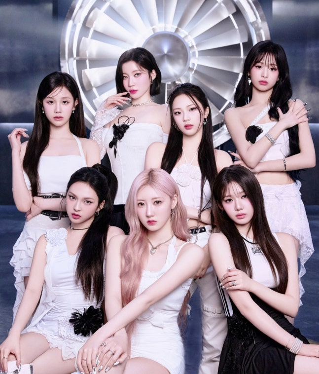
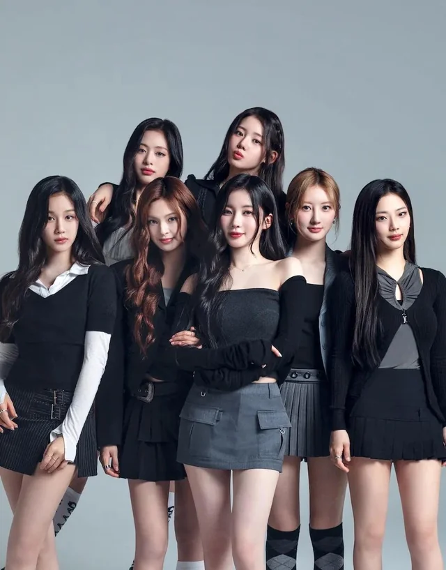

Sometimes, I don't know who I am
Doubting myself again
Can't find a light in the dark
And I'm finding myself in the rain
Tryna get out of the pain
Know that I've come so far
I made a promise, I'll never run and hide
I'm getting stronger
i am getting stronger
A little longer
i'm getting stronger
Now I finally found my wings
I let go of everything
Decided to follow my heart
And I finally able to breathe
Finally able to see
Just who I was born to be
I'm waking up in my dream
Uh
Oh, yeah, that fires in my eyes
No sleep, you keep them lullabies
Cross hearts, I've been the one to ride
Vroom-vroom, I'll see you later, bye
I keep it a hundred, we one in a million, no billion
No kiddin', no ceiling, that's limitless
Stars in the sky, we infinite
Envisioned it, just how I pictured it
Here we are, all of the lights
Spotlight is blinding my eyes
Just breathe and live and let it die
Lift up my head, I'ma rise
Spread out my wings, I'm a fly, fly high
I'm getting stronger
I'm getting stronger
A little longer
I'm getting stronger
Now I finally found my wings
i let go of everything
Decided to follow my heart
I don't care what they say (say)
My life is not a game (game)
Never gon' run away
So don't wake me up
Finally able to breathe (yeah, yeah, yeah)
Can't wake me up
Nothing can wake me up
I'm waking up on my drea
Ozim kim ekanimni bilmayman
Yana o'zimdan shubhalanaman
Qorong'ida yorug'lik topa olmadi
Va men o'zimni yomg'ir ostida topaman
Og'riqdan xalos bo'lishga harakat qiling
bilingki, men hozirgacha kelganman
Men va'da berdim, men hech qachon qochib, yashirinmayman
Men kuchayib boraman
Men kuchayib boraman
Bir oz ko'proq
Men kuchayib boraman
Endi men nihoyat qanotlarimni topdim
Men hamma narsadan voz kechdim
Yuragimga ergashishga qaror qildim
Va nihoyat, nafas olishga muvaffaq bo'ldim
Nihoyat ko'rish mumkin
Men kim bo'lish uchun tug'ilganman
Men tushimda uyg'onaman
Uh
Uh
Oh, ha, bu mening ko'zlarimga olov
Uyqu yo'q, siz ularga beshiklarni qo'yasiz
O'zaro yuraklar, men minadigan odam bo'ldim
Vroom-vroom, keyinroq ko'rishamiz, xayr
Men uni yuzta ushlab turaman, biz millionda bir, milliard yo'q
Hech qanday hazil, shift yo'q, bu cheksizdir
Osmondagi yulduzlar, biz cheksizmiz
Mana, biz hammamiz chiroqlar
Spot nuri ko'zlarimni ko'r qilmoqda
Faqat nafas oling va yashang va u o'lsin
Boshimni ko'taring, men turaman
Qanotlarimni yoying, men pashshaman, balandga uching
Men kuchayib boraman
Men kuchayib boraman
Bir oz ko'proq
Men kuchayib boraman
Endi men nihoyat qanotlarimni topdim
Men hamma narsadan voz kechdim
Yuragimga ergashishga qaror qildim
Menga ular nima deyishlari qiziq emas (aytii)
Mening hayotim o'yin emas (o'yin)
Hech qachon qochma
Shuning uchun meni uyg'otmang
Nihoyat nafas olaman (ha, ha, ha)
Meni uyg'otib bo'lmaydi
Hech narsa meni uyg'ota olmaydi
Men tushimda uyg'onaman

